Clinicians caring for patients with chronic pain
Digital Health Strategies in Pain Management
MEDCIDS · versão apresentada · 2 blocos
Who am I
Your turn
Researchers, data scientists, digital health
…
Today's agenda
Block I
Data Foundations in Chronic Pain
First half
Block II
AI & Digital Technologies
Second half
How many of your clinical decisions about chronic pain are based on data you have never actually seen?
Take a moment. Think about your last 5 patients.
Block I
Data Foundations in Chronic Pain Medicine
Where does pain data come from — and why does it matter?
Healthcare as a complex field
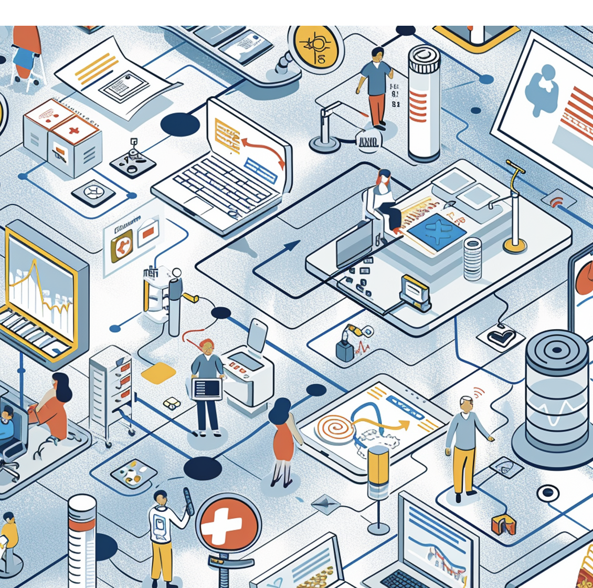
Mariana × Midjourney
Human & AI
What data do we capture about pain patients?
A visual inventory of the data generated along a chronic pain patient's journey.
Structure of an Electronic Health Record
appinventiv.com/blog/ehr-software-development
Structure of an Electronic Health Record
Records talk to each other through Health Information Exchanges.
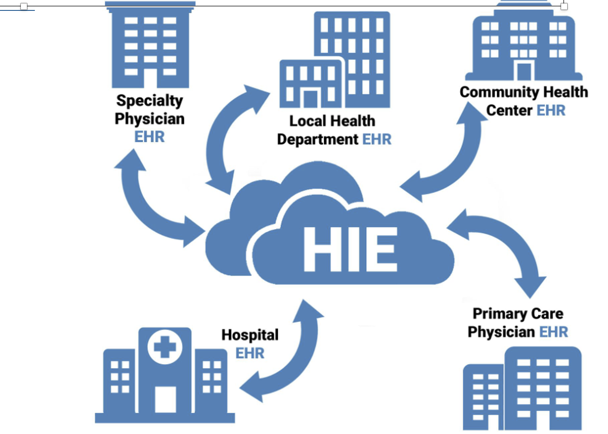
forumsys.com/2022/08/11/health-information-exchange
The pains of pain data
A single numeric pain score captures almost nothing about the patient's actual experience.
What the database sees
7
NRS · today
What the patient said
“It's worst at night, so I barely sleep. I had to give up gardening last year. Some days I'm fine for hours, then it flares and I'm scared to leave the house. I keep thinking the surgery made it worse — nobody really listens to that.”
Missed by the score:
temporal pattern, location, function, catastrophizing, fear-avoidance, emotional context, the patient's own explanatory model.
Patient-Reported Outcomes (PROs) in chronic pain
PROs.Information reported directly by patients about their health, symptoms, quality of life, and treatment experience — without clinician interpretation.
Patient voice
Pain is inherently subjective — no biomarker captures it fully. PROs are the only direct window into the patient's experience.
Clinical outcome
Function, intensity and impact captured longitudinally — a basis for monitoring response and shared decision-making.
Regulatory relevance
Increasingly required by regulators and payers as a measure of treatment effect in chronic conditions.
Wearables and digital biomarkers in pain
Digital biomarkers.Objective, quantitative, physiological or behavioural data collected by digital devices.
Physical activity
Accelerometry as a proxy for functional capacity.
Sleep quality
A critical pain modulator; bidirectional with intensity.
Heart rate variability
An indicator of autonomic nervous system state.
Skin conductance
Arousal and stress responses, linked to flares.
GPS / mobility
Social and functional participation outside the home.
Smartphone behaviour
Typing speed and screen use as mood / cognitive signals.
Caveat.None of these measure pain directly. They measure signals that correlate with pain or its consequences.
Data sources beyond the clinic
Social & environmental
System-level
Clinical
Patient
Claims / administrative.Diagnoses, procedures, prescriptions, utilisation — large-scale and longitudinal, but coded for billing not nuance.
Disease registries.Systematic collection on specific cohorts (fibromyalgia, CRPS) — research-grade, limited to enrolled patients.
Social determinants of health.Housing, employment, socioeconomic status — major pain modulators, rarely in the EHR.
Social media & communities.Pain forums and health apps — unsolicited patient voice, rich but noisy.
Environmental.Weather and pollution — trigger factors for several pain conditions.
Main obstacles
Three things that get in the way of using health data at scale.
Sensitive health data is often kept in silos.
Interoperability, security and privacy issues.
Infrastructure insufficiency for major non-clinical activities.
Main obstacles
Obstacle 1 — Data silos.
Sensitive health data is often kept in silos.
Data silos
Mariana × Midjourney · Human & AI
Main obstacles
Obstacle 2 — Infrastructure.
Infrastructure insufficiency for major non-clinical activities.
A futuristic datacenter
Mariana × Midjourney · Human & AI
Main obstacles
Obstacle 3 — Privacy & security.
Interoperability, security and privacy issues.

Data privacy leaks
Mariana × Midjourney · Human & AI
Data fragmentation across levels of care
The same patient generates disconnected records as they move between primary care, abstract data systems, and hospital teams.
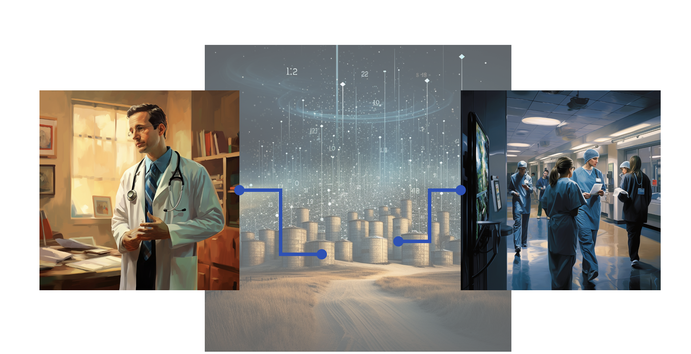
The need for standards
The need for standards
Common languages so different systems can actually talk to each other.
HL7FHIR
ICD9 · 10 · 11
SNOMEDCT
openEHR
OHDSIOMOP
…
Why interoperability matters for pain data
Pain patients see ~5–7 different providers. Data is scattered. Without interoperability, every system is an island.
HL7 FHIR enables.
- Patient apps requesting medication lists from hospital systems.
- The GP receiving the specialist's notes in real time.
- Research platforms aggregating EHR data across sites.
The European Health Data Space (EHDS) builds on FHIR for cross-border data access.
Key insight
Standardisation is the prerequisite for everything else — analytics, AI, real-world evidence.
Data quality
What real EHR data actually looks like — once you start querying it.
HbA1c of 500%
Woman born in 1840
Zombies
Evidence generation
From source data to reliable evidence — the standardised path.
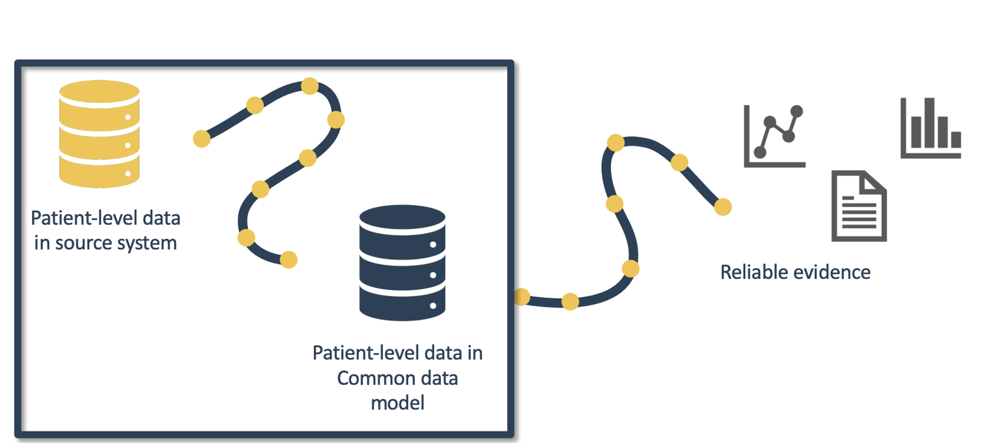
Evidence generation, in practice
Every step of the path is a place where things can go wrong.
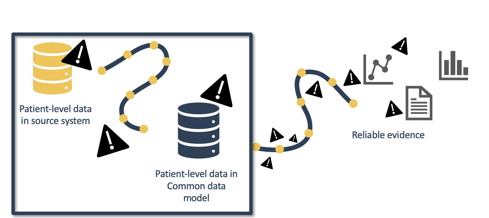
The OMOP Common Data Model
OMOP.Observational Medical Outcomes Partnership — now stewarded by OHDSI ("Odyssey").
"To improve health by empowering a community to collaboratively generate evidence that promotes better health decisions and better care."
Optimised for population-level research, drug safety, and comparative effectiveness — not for clinical care.
Why OMOP exists — origins and mission
OMOP began as a public–private partnership to study product safety using observational health databases.
In 2014, its assets were transferred to OHDSI — Observational Health Data Sciences and Informatics ("Odyssey") — a global research community.
Mission
To improve health by empowering a community to collaboratively generate the evidence that promotes better health decisions and better care.
Design philosophy
The single design choice that explains the rest
Optimised for population-level research, drug-safety surveillance, and comparative effectiveness — not for delivering care or processing claims.
This is why ETL is hard: you're translating operational artefacts into analytical ones.
OMOP CDM — key principles
Patient-centric
Vocabulary and Data Model are blended
Domain-oriented concepts
Accommodates data from various sources
Preserved data provenance
Extendable and evolving
Technology neutrality
OMOP CDM — schema
Six families of tables: clinical, health-system, derived, results, health-economics, and the standardised vocabularies.
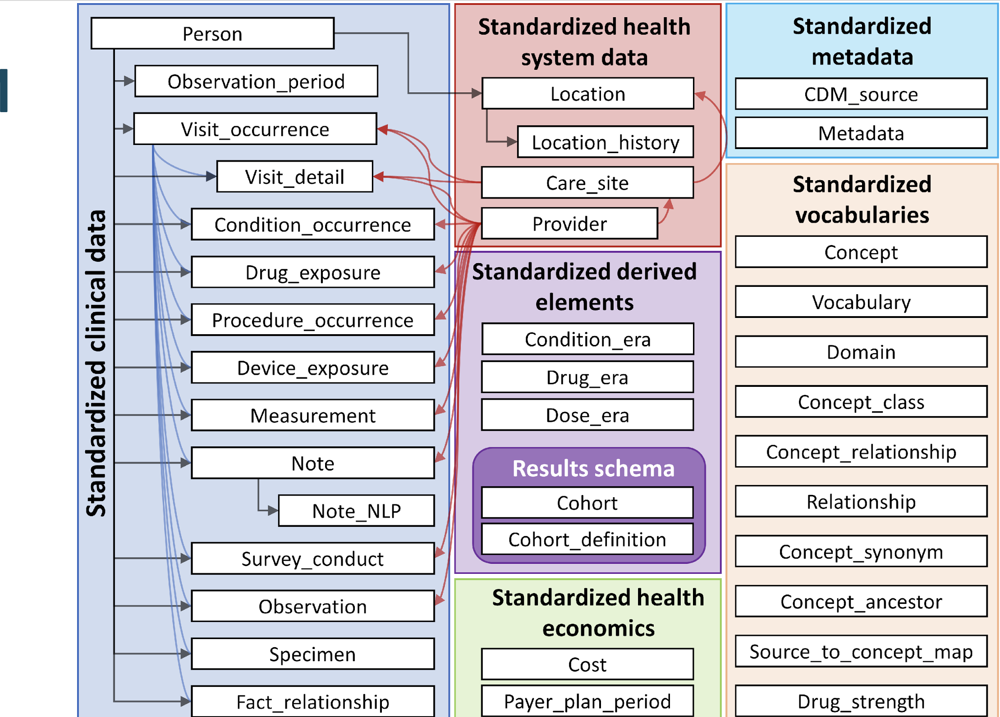
The OHDSI ecosystem
An open, multi-stakeholder research community — code, data models, methods, and people.
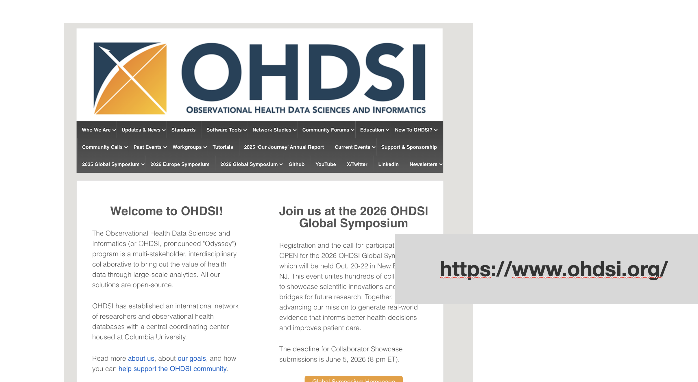
https://www.ohdsi.org/
Naming conventions
Every domain table follows the same pattern — once you learn one, you know them all.
| Feature | Description & purpose | Field name | Example |
|---|---|---|---|
| Patient-centric | Every domain table carries a patient identifier; patient data is retrievable independently of other domains. | person_id | person_id 123 |
| Unique domain ID | Each domain table has its own primary key. | <entity>_id | condition_occurrence_id 470985 |
| Standard concept | Foreign key into the standard vocabulary — what analytics actually use. | <entity>_concept_id | condition_concept_id 313217 (SNOMED "Atrial fibrillation") |
Naming conventions
Source-side fields — kept alongside the standard concepts for provenance.
| Feature | Description & purpose | Field name | Example |
|---|---|---|---|
| Source value | Verbatim source data, kept for provenance — not for analytics. | <entity>_source_value | condition_source_value 427.31 (ICD-9-CM) |
| Source concept | Foreign key into the vocabulary for the original source code. | <entity>_source_concept_id | condition_source_concept_id 44821957 |
| Source type | Foreign key indicating the origin of the record. | <entity>_type_concept_id | condition_type_concept_id 38000199 ("Inpatient header — primary") |
Vocabulary mapping
Three tables hold the entire vocabulary system.
All content — every concept lives in
conceptDirect relationships between concepts in
concept_relationshipMulti-step hierarchical relationships pre-processed into
concept_ancestorVocabulary mapping in practice
Many source vocabularies funnel into one standard concept set — for drugs, that hub is RxNorm.
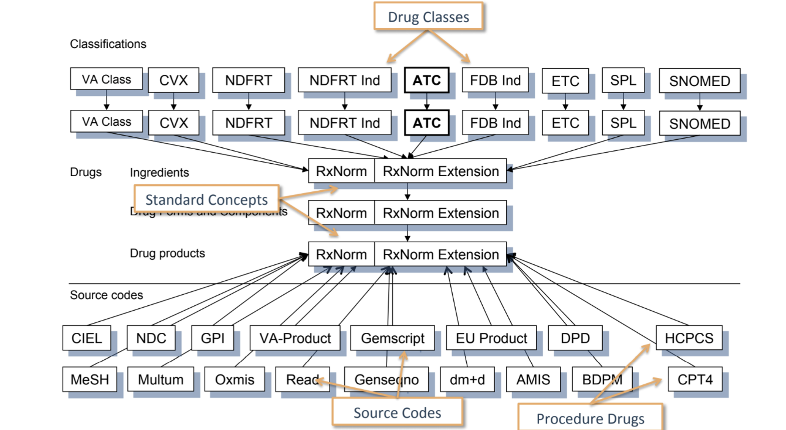
Block I · continued
The European Health Data Space
EHDS · the regulatory backbone for primary and secondary use of health data in Europe.
Where it began
Ursula von der Leyen's mission letter (1 December 2019), addressed to Stella Kyriakides, Commissioner for Health and Food Safety.
Mandate: create a European Health Data Space to drive better care and reduce inequalities.
Goal: enable the exchange of health data and support new preventive strategies, treatments, and medicines.
EHDS sits inside a wider EU data strategy
Nine sectoral data spaces sharing a common technical and governance scaffolding — health is one of them.
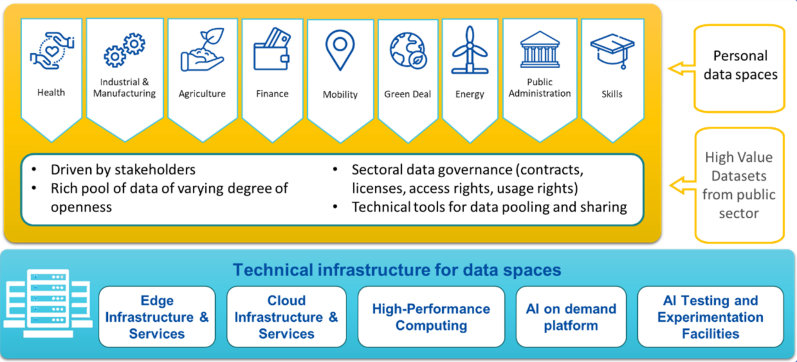
The EHDS regulation
Proposed by the Commission in May 2022. Adopted by the European Parliament in April 2024.
COM(2022) 197 final — proposal, Strasbourg 3.5.2022
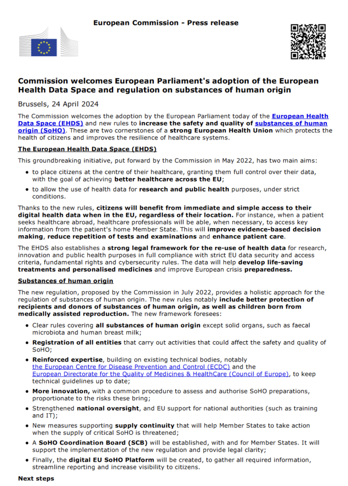
European Commission press release · 24 April 2024
Primary and secondary use
Timely and simplified exchange of, and access to, health data for different use cases.
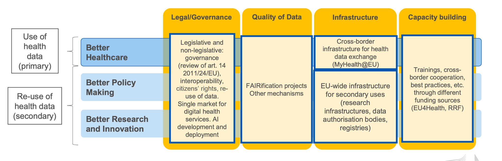
EHDS for secondary use — how it works
- Common European rules. Who must make which data available, for what purposes, and under what conditions.
- Common infrastructure. A shared platform for data exchange across Member States.
- Health Data Access Bodies. National orchestrators of the access process.
- Data permits. Standard requirements with common safeguards before any reuse.
- Data catalogues. Listings of the datasets that are actually available, where, and at what quality.
User journey
From "what data exists?" to a published, privacy-preserving result.
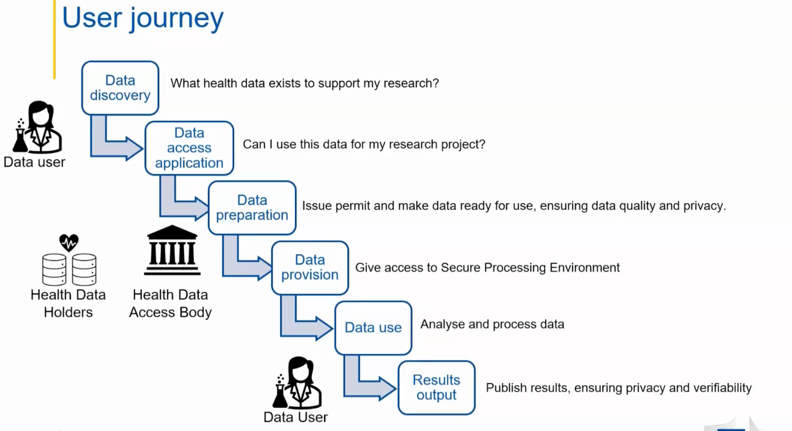
Data categories under secondary use
What can be made available — defined in Article 51 of the regulation.
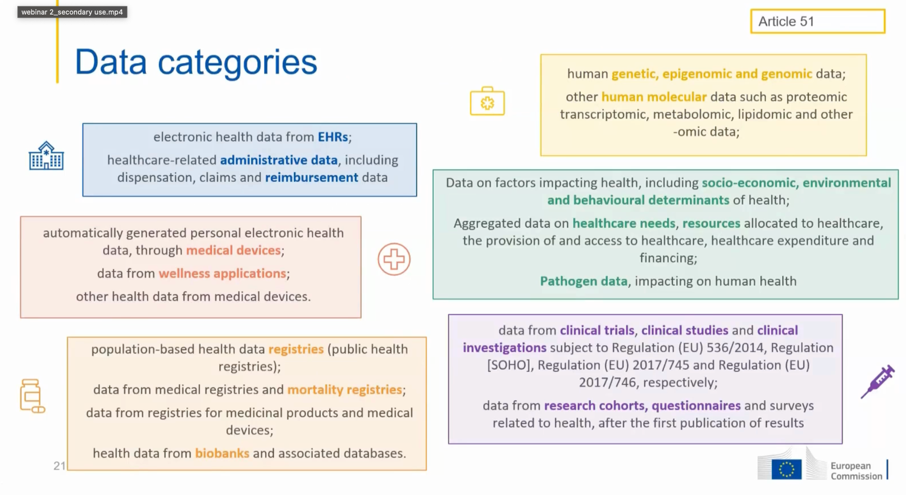
Allowed and prohibited purposes
What you may and may not do with EHDS data — Articles 53 & 54.
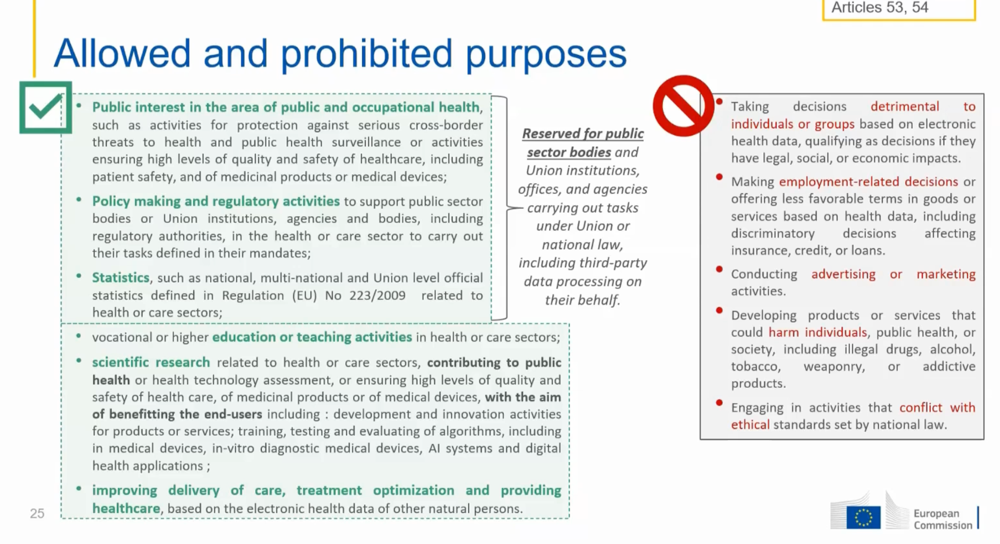
Opt-out
Individuals have the right to opt out of the secondary use of their health data through EHDS.
It can be exercised at any time, without justification, and is reversible. The mechanism must be easy to access and understand.
Member States may set narrow rules so that, in selected cases and under strict conditions, opt-out data can still be made available for matters of public interest.
Left open by the legislator
Where and how to exercise it (flexibility for Member States); the mechanism for making data available; temporal effect — opt-out applies only forward, not to existing licences and extractions.
EHDS within the EU regulatory framework
EHDS doesn't sit alone — it overlaps with GDPR, the Data Governance Act, the AI Act, MDR, and several others.
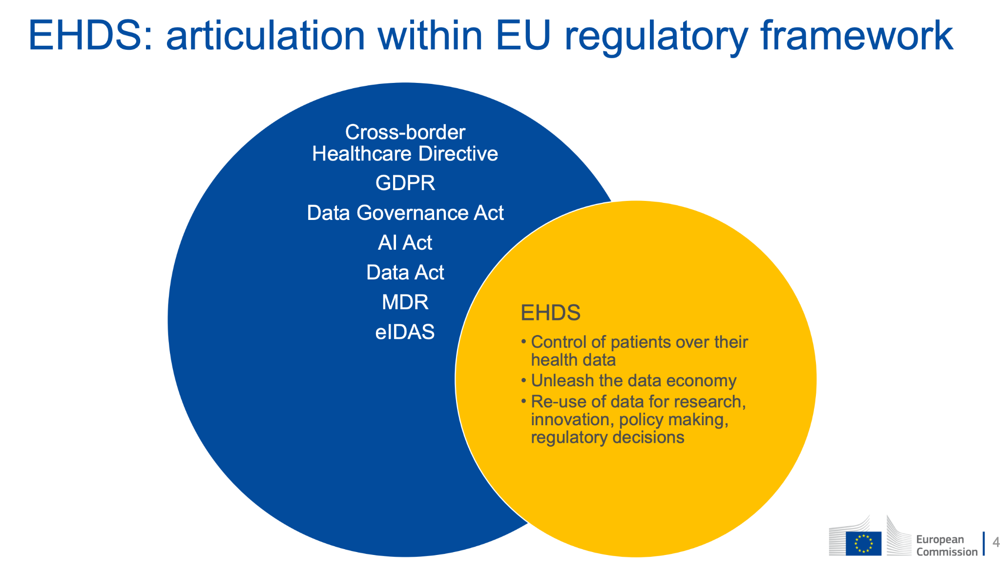
EHDS — overall timeline for application
Article 105: a phased rollout from 2024 through 2036, by use case and data category.
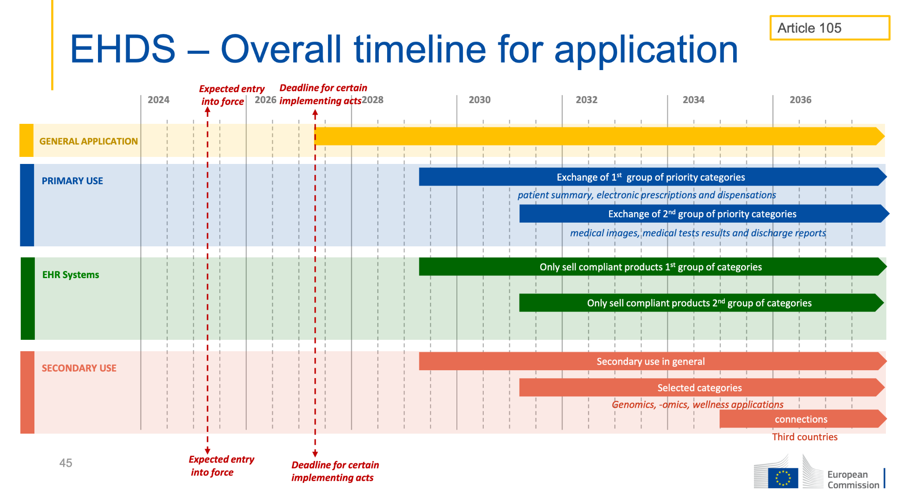
FAIR data principles
A framework for maximising the value of research data.
F
Findable
Pain example: a CRPS registry indexed in an EU dataset catalogue, discoverable by other researchers.
A
Accessible
Pain example: opioid-prescribing data behind a documented EHDS data permit.
I
Interoperable
Pain example: NRS scores stored as LOINC codes so they aggregate across hospitals.
R
Reusable
Pain example: a fibromyalgia cohort released with versioned phenotype definitions and a CC-BY licence.
Why it matters for pain research.
Pain registries that aren't FAIR are harder to reuse and federate; FAIR is important for AI training; and EU funders increasingly look for it.
Federated analysis — research without moving data
Patient data can't leave the institution. So you send the analysis to the data, not the data to the analysis.
01
Each site converts its data to OMOP CDM locally.
02
Researcher develops an analysis package (OHDSI ATLAS or R).
03
Package runs at each site, on local data — no records leave.
04
Only aggregated, anonymous results return to the researcher.
Live networks. EHDEN (Europe) · DARWIN-EU (EMA) · the OHDSI international network.
Pain application
A multi-centre opioid-safety study across 15 EU countries — without anyone sharing patient records.
Data governance and patient consent
Key concepts
- Data ownership. Patient? Hospital? State?
- Consent models. Explicit (opt-in) vs broad consent vs dynamic consent.
- Purpose limitation. Use only for consented purposes (GDPR Art. 5).
- Data minimisation. Collect only what is necessary.
- DPIA. Required for large-scale health-data processing.
For pain research specifically
- Chronic pain patients often have vulnerable profiles — consent must be genuinely informed.
- Secondary use of pain-clinic data requires ethical approval.
- EHDS introduces a supervised access model with data permits.
Patient→
Consent→
Ethics→
Data access→
Research→
Outputs
Block I · Discussion
Questions to the group
1
In your pain clinic, which data is routinely collected in structured format — and what is only in free text?
2
Have you ever had difficulty getting data from a referring hospital or GP? What was the cause?
3
If you could have one data element added to every patient's pain record tomorrow, what would it be?
Block II
AI, Digital Technologies & The Future
What AI actually does in pain medicine today — and what's coming next.
Artificial Intelligence
Artificial Intelligence
What is AI?
"Intelligence" demonstrated by machines.
Machines that mimic functions traditionally associated with the human mind.
A multidisciplinary field — informatics, psychology, linguistics, philosophy.
AI in pain research is exploding
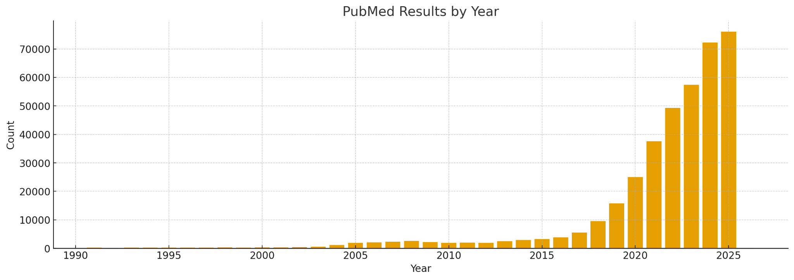
PubMed search results by year, query: "artificial intelligence" AND "pain". Accessed May 2026.
Not new — a long history
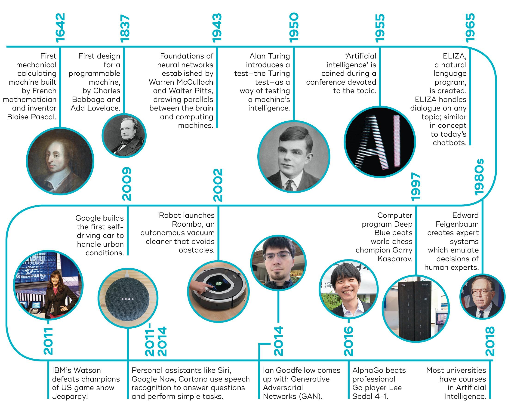
From rule-based expert systems through neural networks to today's foundation models — over six decades of work.
Artificial Intelligence
Artificial Intelligence
Machine Learning
Machine Learning
How would you have imagined this would be programmed?
Traditional programming
DataProgram
→
Computer
→
Output
You write the rules. The machine applies them.
Machine Learning
DataOutput
→
Computer
→
"Program"
You give it examples. The machine finds the rules.
Three ways machines learn
What kinds of "examples" can we give? Three paradigms.
01
Supervised
The model learns from labelled examples — input plus the correct answer.
e.g. predicting a diagnosis from imaging.
02
Unsupervised
The model finds structure in unlabelled data — clusters, patterns, embeddings.
e.g. grouping patients by trajectory.
03
Reinforcement
The model learns by actions and rewards — try, get feedback, adjust.
e.g. tuning a treatment protocol.
Artificial Intelligence
Artificial Intelligence
Machine Learning
Deep Learning
Neural networks
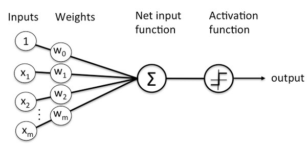
Inspired loosely by biology — units take inputs, apply weights, pass them through a function, and forward the result.
Stack many layers of these units and you get a deep neural network.
Artificial Intelligence
Artificial Intelligence
Machine Learning
Deep Learning
Language Models
Inside an LLM
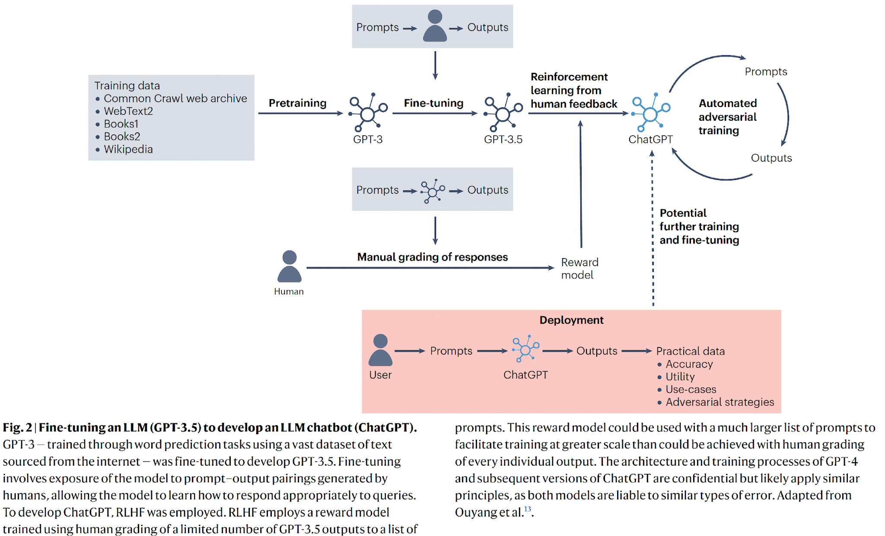
Pre-training on web-scale text → fine-tuning → reinforcement learning from human feedback → deployment. Adapted from Ouyang et al. (2022).
What the model actually does
An LLM predicts the most likely next token, given everything that came before.
The cat sat on the ___→mat
The colour of the sky is ___→blue
The patient reported severe ___→pain
Pre-train once, specialise many times
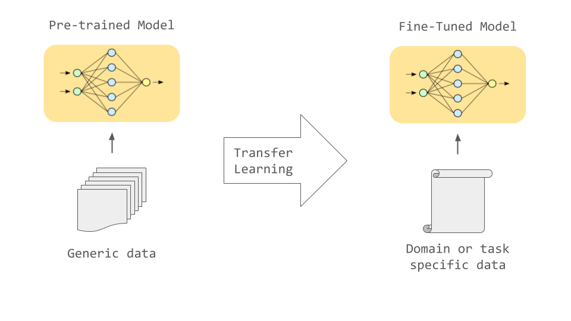
A single pre-trained base model is reused across tasks via fine-tuning — far cheaper than training from scratch.
Models keep growing
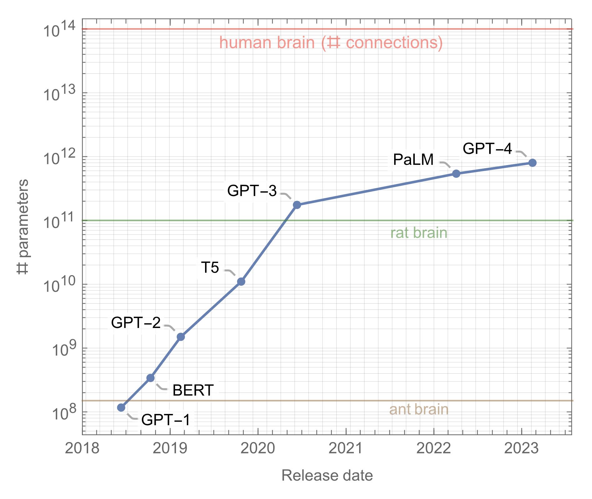
Parameters per model, by release year. Roughly six orders of magnitude in five years.
…and they read more
Words seen during training have grown alongside the parameter count.
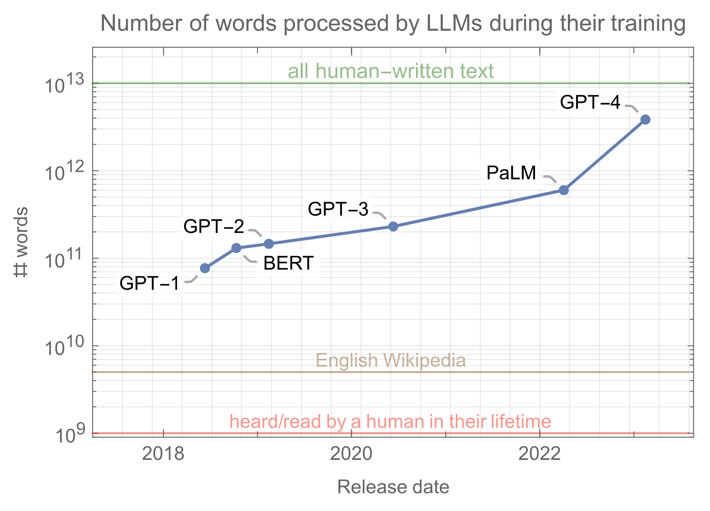
Training corpus size, by release year — frontier models now train on trillions of tokens.
GPT-3.5 → GPT-4 in two years
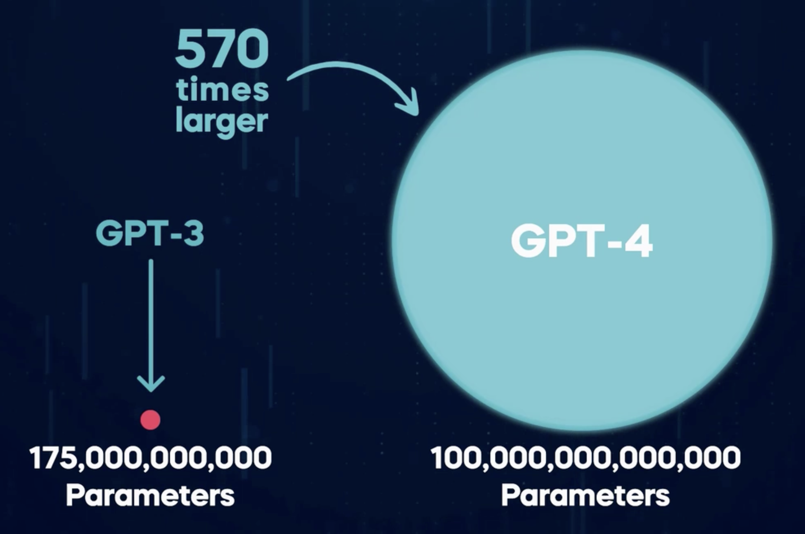
GPT-4 is estimated to be ~570× larger than GPT-3.5 — released roughly two years apart.
Block II · 02
Generative AI
Beyond text — multimodal models that generate images, code, and molecules.
What can these models work with?
Started with text. Then…
Text
Code
Image
Molecules
Modern frontier models are multimodal — they handle several of these at once.
The LLM evolutionary tree
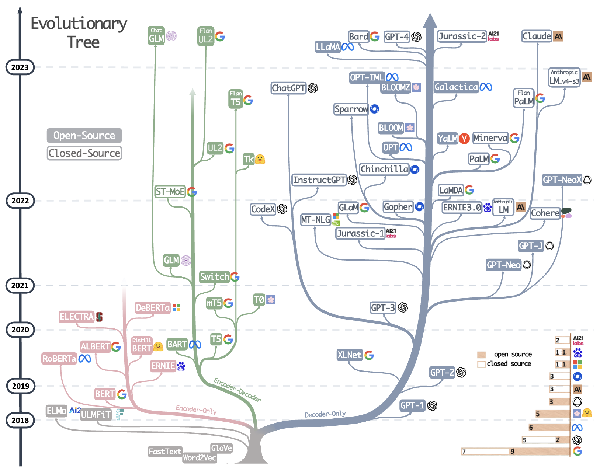
Open- and closed-source LLM families, 2018–2023. Yang et al., "Harnessing the Power of LLMs in Practice", arXiv:2304.13712.
What worries clinicians about generative AI
Hallucinations
References
Data security
Costs
Explainability
Complexity
Prompt engineering
What it knows is bounded
A model can only know what was in its training data — and only up to the cutoff date.
Recent guidelines, local protocols, and post-training literature are invisible unless explicitly retrieved.
Bias is baked in
Training data carries the biases of its sources — under-represented populations, historical inequities, geographic skew.
For pain in particular, this matters: pain is reported and measured very differently across groups.
We can't always explain it
Even the people who build these models can't fully account for any single output.
Explainability tools help — but in clinical settings, this opacity is part of the regulatory and ethical conversation.
Why this matters now
Health information needs and clinical data are growing faster than humans can manage them — that's the gap AI is being asked to fill.
Block II · 03
AI in Practice
Where we actually are — and what really helps in the clinic.
AI everywhere…
but where, exactly, in pain medicine?
Reality check
The 1,357 AI-enabled devices approved by the FDA
AI medical devices — FDA
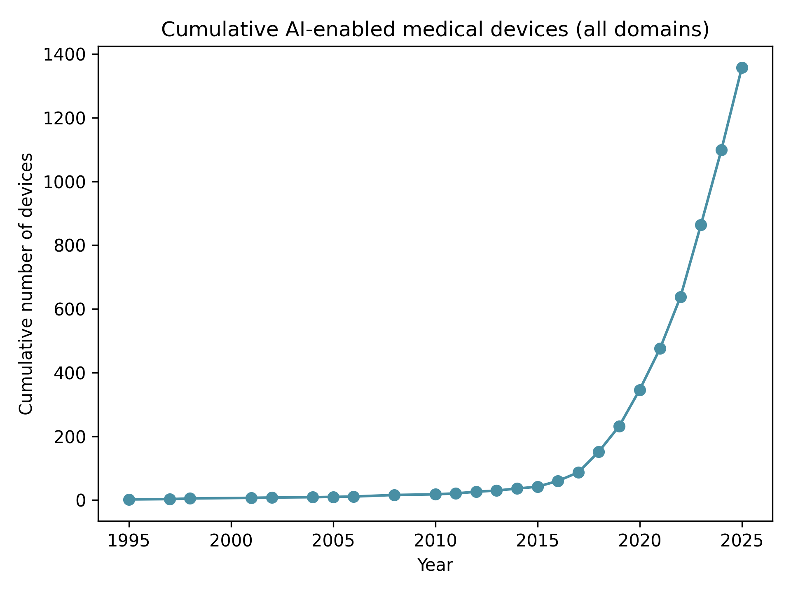
N = 1 357. fda.gov/medical-devices/software-medical-device-samd/artificial-intelligence-enabled-medical-devices
FDA AI devices — by specialty
Radiology dominates: ~77% of devices are imaging-based.
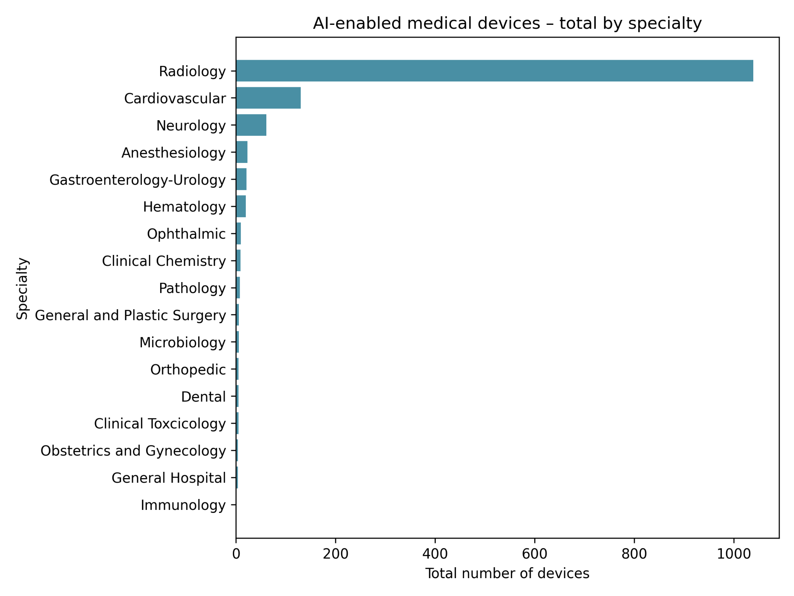
Radiology: 1 039 · Cardiovascular: 130 · Anesthesiology: 23.
Anesthesiology — only 1.7%
23 of 1 357 AI-enabled devices.
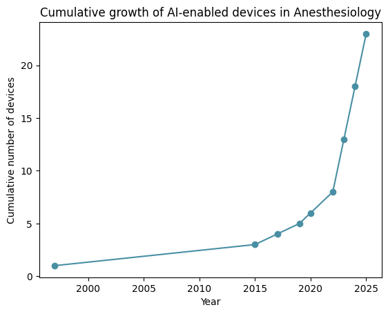
The 23 "anesthesiology" devices
Three of the named ones — all very specific applications.
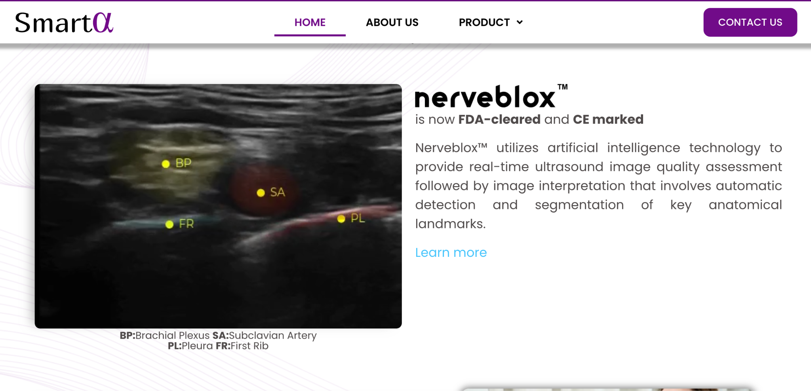
Nerveblox
Real-time ultrasound assistance for peripheral nerve blocks. smartalpha.ai
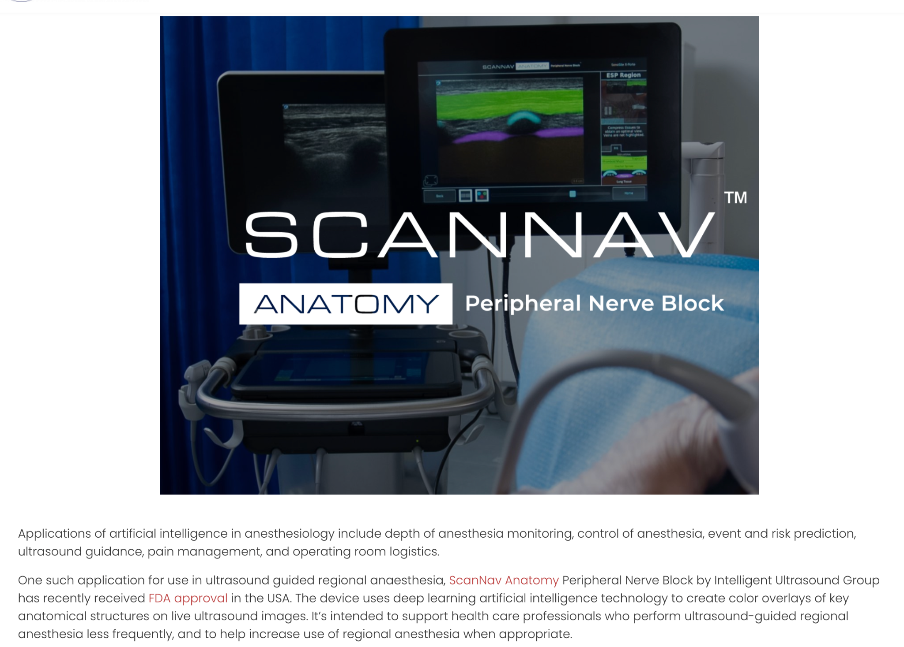
ScanNav
Anatomy recognition for peripheral nerve blocks. anaesthesia-singapore.org.sg
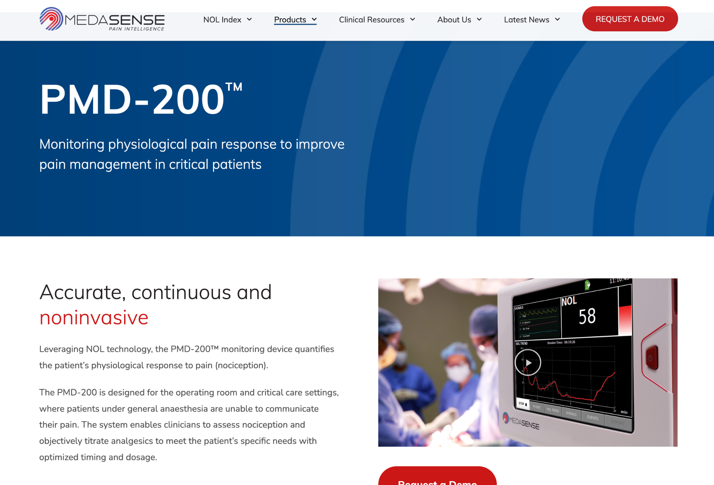
PMD-200
Continuous nociception monitoring under anaesthesia. medasense.com
What's actually in those 23?
"Anesthesiology" is a generous label.
😴
Sleep apnea — 13
57% of the category — sleep-disordered breathing detection.
💉
Regional blocks — 3
13% — ultrasound assistance for nerve blocks.
📊
Pain monitoring — 1
4% — a single nociception-monitoring device.
📦
Other — 7
30% — wheeze detection, insulin dosing, miscellanea.
What this means
- ✓ The technology exists.
- ✓ Scientific evidence is accumulating.
- ✓ Regulation is becoming clearer (AI Act).
- ✓ Adoption is coming — but gradually.
We're at the early stage
of a long journey.
of a long journey.
Reflection 1
Talking about health data
Reflection 1 — health data
🧠
Data are ignorant.
Value emerges from clinical interpretation and proper context.
🩺
Clinical domain, not technical.
Quality is the responsibility of those who generate and interpret the data — not just "an IT problem".
⚖️
Quality begets quality.
Bad data → bad AI.
The reality of anesthesia data
A data-intensive field
- Continuous vital parameters
- Drug doses and timing
- Events and interventions
- Patient characteristics
- Post-operative outcomes
Underused potential
- Data sit in isolated silos
- Devices aren't interoperable
- Manual records are incomplete
- Lack of standardisation
- Clinical value not extracted
The challenge of device data
🔗
Limited interoperability
Impossible to correlate data from different sources in any useful timeframe.
🚫
Restricted access
Closed or absent APIs make integration with clinical records difficult.
🔀
Little standardisation
Each manufacturer uses its own formats and terminologies.
Reflection 2
Regulation
AI Act + European Health Data Space
A regulatory moment for health AI.
New requirements
- Mandatory algorithmic transparency
- Decision traceability
- Documentation of training data
- Continuous performance logs
Regulatory pressure to open and standardise medical-device data.
Emerging opportunities
- Multi-centre research, easier
- More robust algorithm development
- Validation in diverse populations
- Continuous benchmarking
Access to more data does not by itself solve quality.
The AI Act
Regulation (EU) 2024/1689 — the first global legal framework for AI.
Key objectives
- Ensure AI systems are safe and respect EU fundamental rights and values.
- Promote investment and innovation in AI through a clear legal framework.
- Enable lawful, safe and reliable AI applications in the EU single market.
Why we need it
- Most systems are low-risk, but some create harms that need addressing to avoid undesirable outcomes.
- AI decisions can be hard to understand — and may produce unfair disadvantages (e.g. hiring).
- Pre-existing protection was insufficient for AI-specific challenges.
What is an "AI system"?
"An AI system is a machine-based system designed to operate with varying levels of autonomy, that may exhibit adaptiveness after deployment, and that — for explicit or implicit objectives — infers, from the input it receives, how to generate outputs such as predictions, content, recommendations or decisions that can influence physical or virtual environments."
💡 This definition was the subject of intense debate during the legislative process.
AI Act — who's in scope?
It applies to:
- Providers placing AI systems on the EU market or putting them into service.
- Users of AI systems within the Union.
- Providers and users in third countries — when the output is used in the EU.
AI Act — risk levels
Obligations scale with risk.
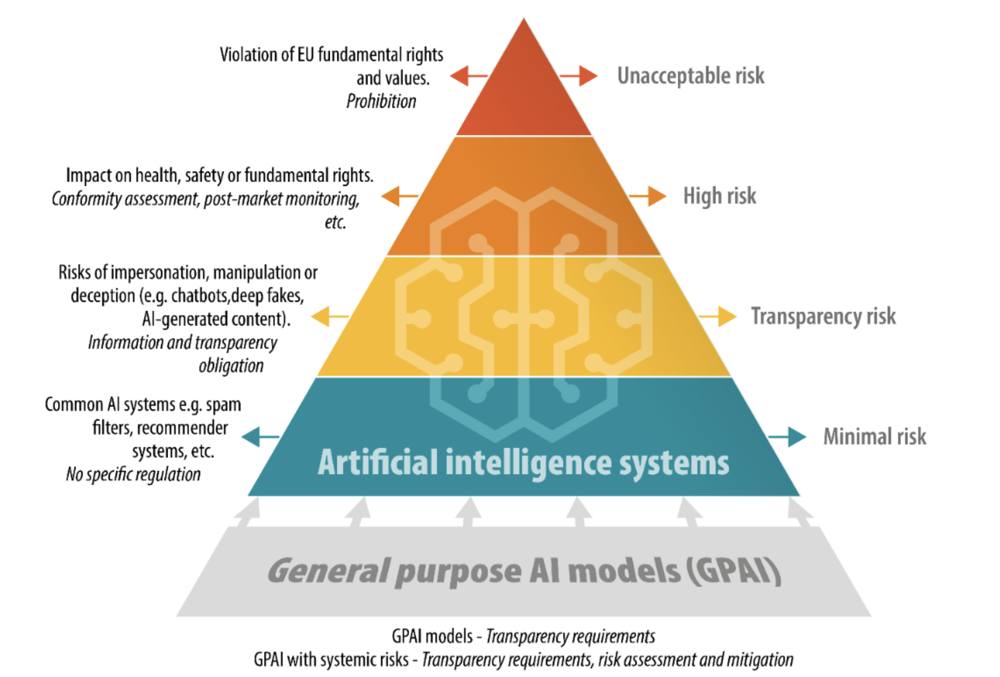
Adapted from europarl.europa.eu/RegData/etudes/BRIE/2021/698792
Unacceptable risk
Tier 1
Prohibited
Systems considered a threat to individuals — manipulation of vulnerable groups, social scoring, certain biometric identification and categorisation.
Real-time and remote biometric identification (e.g. live facial recognition) is banned, except under strict law-enforcement conditions with prior judicial approval.
High risk
Tier 2
Strict obligations
Not banned, but subject to strict obligations before market placement: conformity assessment, post-market monitoring.
Examples: critical infrastructure, education and employment, healthcare and product safety, essential services, remote biometrics, law enforcement, migration and justice.
Limited (transparency) risk
Tier 3
Information & transparency
Obligation to inform humans when interacting with an AI system (e.g. chatbots).
Generative AI providers must ensure outputs are identifiable and clearly labelled (e.g. deepfakes, public-facing informational text).
Minimal or no risk
Tier 4
No specific rules
The AI Act introduces no rules for AI considered minimal or no risk.
The vast majority of systems currently used in the EU sit in this category.
Examples: AI in video games, spam filters.
General-purpose AI (GPAI)
- Specific rules for GPAI — applies to general-purpose models and those representing systemic risks.
- Transparency obligations: technical documentation, downstream-provider information, copyright, text-and-data mining (TDM), training-content summary, EU representative.
Systemic risk
GPAI with "high-impact capabilities" — providers must notify the Commission when training compute exceeds 10²⁵ FLOPs. Above that threshold, systemic risk is presumed. Additional duties: risk assessment and mitigation, cybersecurity, incident reporting, corrective measures.
Timeline & AI literacy
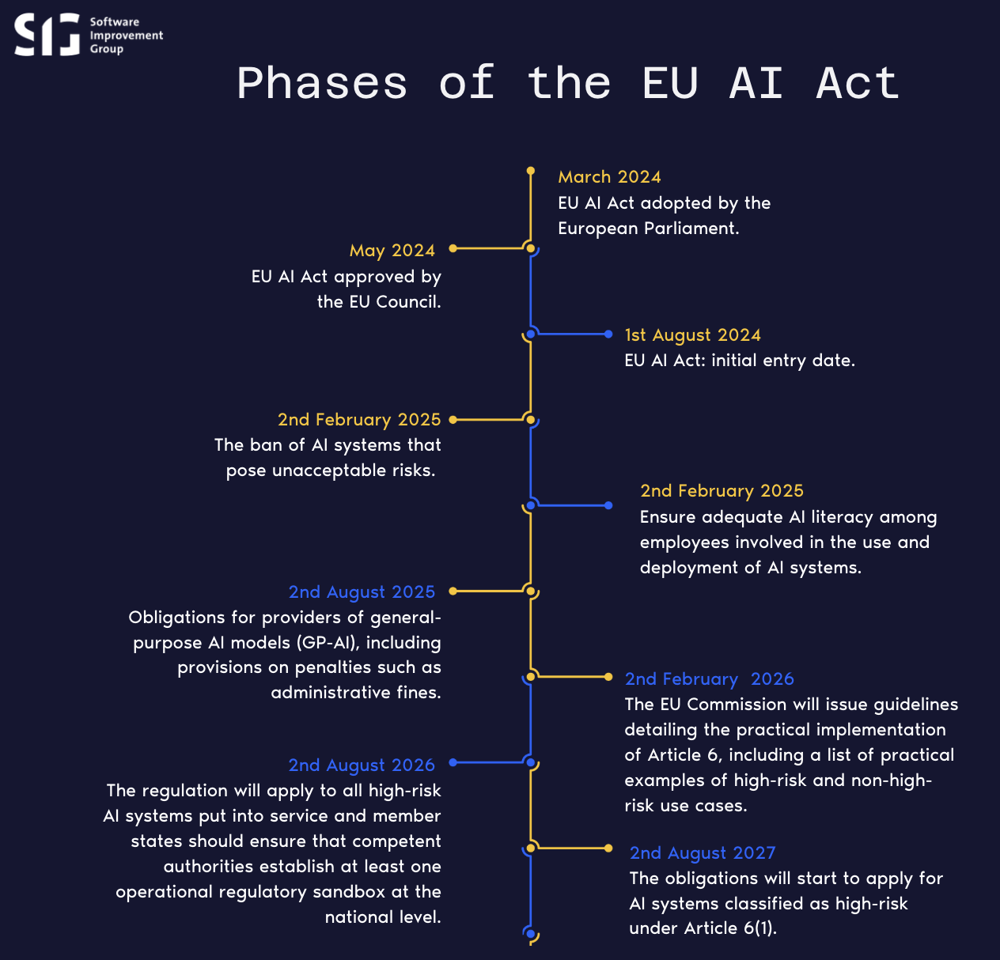
From 2 February 2025, organisations on the EU market must ensure staff working with AI have adequate AI literacy — applies to providers and users. softwareimprovementgroup.com/eu-ai-act-summary/
Reflection 3
AI in daily "clinical" practice
ChatGPT is just the tip
ChatGPT
Gemini
Copilot
Claude
Perplexity
LLaMA
Mistral
Use cases — what clinicians actually reach for
✍️ Writing & documentation
Reports, summaries, patient letters, translations.
💭 Clinical brainstorming
Differential diagnosis, second opinions, case discussion.
🎓 Teaching & training
Lecture prep, scenario generation, exam-style questions.
Useful? Probably.
Regulated? "It depends."
Regulated? "It depends."
Why clinicians use it anyway
✓
Real need.
The tools genuinely help with daily work.
⚡
Speed vs. bureaucracy.
Institutional approval takes months; AI is here today.
🚫
Lack of alternatives.
Institutions don't offer equivalent approved solutions.
⚠️
Unaware of the risks.
Many don't realise they're breaching policies or regulation.
The risks — three angles
Privacy & security · Clinical & professional · Institutional & legal.
Not everything is bad…
Drivers of change · Use-case identification · Digital literacy.
Suggestions?
The role of the clinician — and what comes next.
Clinicians are not just users of AI.
Ethical foundations of AI
Six pillars: autonomy & consent · equity & non-discrimination · clinical accountability · transparency & explainability · privacy & data protection · beneficence & non-maleficence.
Thank you
mcpais@med.up.pt